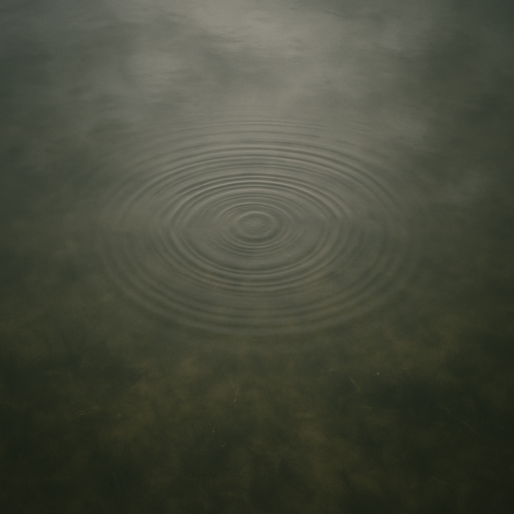

Discover the Power of AI Focus
Like a skilled assistant, AI tools can transform your chaotic workflow into a clear, focused system that enhances productivity and reduces cognitive load.
Information Overload
Drowning in emails, notifications, and competing priorities. Important tasks get lost in the constant information churn.
AI-Enhanced Clarity
Streamlined workflow where AI intelligently organizes, prioritizes, and automates. Focus comes naturally, allowing deep work on what truly matters.
Implementing AI-Powered Focus
Smart Prioritization
Leverage AI assistants to analyze your tasks and surface what's most important, reducing decision fatigue.
Intelligent Filtering
Deploy AI tools that analyze, categorize and filter information, protecting your attention for high-value work.
Workflow Automation
Automate repetitive tasks with AI workflows, freeing your cognitive resources for creative and strategic thinking.
Ready to Enhance Your Productivity?
Explore our AI solutions to streamline your workflow: